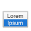

Tool | Tool name | Related topic |
Selection tool | ||
Text tool | ||
Line tool |
| |
Rectangle tool |
| |
Rounded Rectangle tool |
| |
Oval tool |
| |
Edit Box tool | ||
| Drop-down List tool | |
 | Pop-up Menu tool | |
| Checkbox Set tool | |
Radio Button Set tool | ||
Drop-down Calendar tool | ||
Concealed Edit Box tool | ||
| Button tool | |
| Popover Button tool | |
| Button Bar tool | |
Tab Control tool | ||
Slide Control tool | ||
Portal tool | ||
Chart tool | ||
Web Viewer tool | ||
Field tool | ||
Part tool | ||
Format Painter tool |